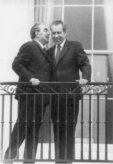

Leonid Brezhnev ve Richard Nixon, Haziran 1973
Nixon için, Amerika’nın Vietnam’dan çıkarken katlandığı sancılı süreç, sonuçta Amerika’nın dünyadaki itibarını korumakla ilgiliydi. Bu cehennem olmasaydı da Amerikan dış politikasının yeniden büyük ölçüde değerlendirmeden geçirilmesi gerekiyordu; çünkü Amerika’nın dünya sahnesine toptan egemen olması çağı sonuna yaklaşıyordu. Amerika’nın nükleer üstünlüğü sona eriyordu ve ekonomik üstünlüğüne de, her ikisi de Amerika’nın kaynakları ile restore edilmiş olan ve Amerikan güvenlik garantileri ile korunan Avrupa’nın ve Japonya’nın dinamik büyümesi ile tehdit altındaydı. Son olarak Vietnam, gelişen dünyada Amerika’nın rolünün yeniden değerlendirilmesi ve çekilme ile gereğinden fazla yayılma arasında korunabilir bir pozisyon bulma zamanının geldiğine işaret etmiştir.
Hesap defterinin diğer yüzünde, Soğuk Savaş boyunca yekpare taştan bir abide gibi gözüken komünist blokta ciddi çatlaklar açılınca, Amerikan diplomasisi için yeni fırsatlar kendini göstermeye başladı. 1956’da Kruşçev’in, Stalin devrinin gaddarlıkları ile ilgili açıklamaları ve 1968’de Çekoslovakya’nın Sovyetlerce istilası, bölgeleri için komünizmin ideolojik çekiciliğini, dünyanın geri kalan kısmı için zayıflattı. Daha önemlisi, Çin ile Sovyetler Birliği arasındaki bozuşma, Moskova’nın birleşmiş komünist hareketin lideri görüntüsünü bozdu. Bütün bu gelişmeler, diplomatik esneklik için yeni bir ortam doğduğunu gösteriyordu.
Yirmi yıl boyunca, Wilsoncu idealizm, Amerikan liderlerinin bir misyoner enerjisi ve heyecanı ile küresel rollerini yapmalarını sağladı. Fakat 1960’lı yılların Çinhindi’nde sıkışıp kalmış ve iç çekişmelerle yıpranmış Amerika’sı, uluslararası rolünün daha karmaşık ve daha detaylı bir tanımının yapılmasını gerektiriyordu. Wilson, uluslararası işlerde yeni ve herhangi bir problemi nihai çözümüne kadar izleme yeteneğine güvenen bir ülkeye yol gösteriyordu; Nixon ise, düş kırıklığına uğramış, geleceği, ulaşılabilir uzun vadeli hedefler bulmasına ve düşmanlık karşısında kendine güvensizlik duygusuna kapılmadan bu hedefleri azimle takip edebilmesine bağlı olan bir toplum devralmıştı.
Richard Milhous Nixon’a, iç savaş koşullarına yakın bir ülke miras kalmıştı. Elit bir zümre tarafından derin bir kuşku ile karşılanan ve temsilcilerinden birçoğu kendisine güvenmeyen Nixon, dünyanın en önde gelen demokrasisinin sorumluluktan kaçmayacağı ve kaderini terk etmeyeceği inancım sonuna kadar korudu. Çok az başkan Nixon kadar karmaşıktı: Utangaç, aynı zamanda azimli; endişeli, fakat metin; entelektüellere güvenmeyen, buna karşın kişisel olarak derin düşünebilen; zaman zaman düşünmeden konuşan, bununla beraber sabırlı ve stratejik planlamada ileri görüşlü Nixon, kendisini, hâkim Amerika’dan, lider Amerika’ya geçiş döneminde Amerika’nın dümen başında buldu. Genellikle açıklamalarında cömert davranmayan ve kişisel sıcaklık gösterme yeteneği olmayan Nixon, en zor şartlar altında, toplumunu bildiği bir dünyadan, önceden tanımadığı bir dünyaya doğru yöneterek hayati liderlik sınavını başarı ile verdi.
Hiçbir Amerikan başkanı, onun kadar uluslararası ilişkiler hakkında bilgi sahibi değildi. Theodore Roosevelt dışında hiçbir başkan onun kadar dış seyahat yapmamıştı veya diğer liderlerin görüşlerini öğrenmek için onun kadar samimi ilgi göstermemişti. Nixon, Churchill veya de Gaulle gibi bir tarih araştırmacısı değildi. Genellikle bir ülkenin geçmişi ile ilgili, o ülkenin içinde bulunduğu şartlar hakkında temel gerçekleri kavrayacak kadar bilgi edinmekle yetinir, kimi zaman o kadarını da öğrenmezdi. Ancak dikkatini çeken herhangi bir ülkenin politik dinamizmini kavramakta esrarengiz bir yeteneği vardı; jeopolitik gerçekleri kavraması ise, gerçekten çarpıcıydı. Nixon’ın iç politikayı yönetmesi, zaman zaman ihtiras ve kişisel endişe ile çarpıtılmış olabilir. Fakat dış politikaya gelince, güçlü analiz yeteneği ve olağanüstü jeopolitik içgüdüsü, daima uyanık bir şekilde Amerikan çıkarları üzerinde odaklanmıştı.
Nixon, insanın temel iyiliği veya uluslar arasında ortak güvenlik tarafından korunacak olan esas bir uyum bulunduğu şeklindeki Wilsoncu görüşleri kabul etmezdi. Wilson, karşı konulmaz bir şekilde barış ve demokrasiye doğru ilerleyen bir dünya algılamıştı ve bu süreçte Amerika’nın misyonu, kaçınılmaz sonucun gerçekleşmesine yardımcı olmaktı. Nixon için dünya, dostlar ve düşmanlar arasında, işbirliği alanları ile çıkarların çarpıştığı alanlar arasında bölünmüştü. Nixon’ın anlayışına göre, barış ve uyumluluk, eşyanın doğal düzeni olmayıp, istikrarın ancak uyanık çabalarla sağlanabildiği tehlikeli bir dünyada geçici vahalardı.
Nixon Amerika’yı, birçok geleneksel idealistlerce çirkin sayılan ulusal çıkar kavramına göre yönlendirmeye çalıştı. Eğer büyük güçler, Birleşik Devletler dâhil, XVIII. yüzyıl aydınlanma ruhu içinde rasyonel olarak ve beklendiği gibi kendi çıkarlarının peşinde olurlarsa, Nixon’ın inancına göre, birbiri ile rekabet halindeki çıkarların çatışması sonucunda denge ortaya çıkacaktı. Theodore Roosevelt’e benzer, fakat XX. yüzyıldaki diğer Amerikan başkanlarına benzemeyen bir şekilde, Nixon, istikrar için güç dengesine güveniyor ve kuvvetli bir Amerika’nın küresel denge için şart olduğunu düşünüyordu.
Bu iki görüş de, o zamanlar modaya hayli aykırı düşüncelerdi. Nixon, 3 Ocak 1972 tarihli Time dergisinde çıkan söyleşide şöyle diyordu:
“Dünya tarihinde, uzun barış dönemlerinin yalnızca güç dengesi olduğu zaman yaşandığını hatırlamamız gerekir. Bir devlet, olası rakibine karşı aşırı güçlenirse savaş tehlikesi onaya çıkıyor. Bu yüzden ben, Birleşik Devletler’in kuvvetli olduğu bir dünyaya inanıyorum. Eğer güçlü ve sağlıklı bir Birleşik Devletler, Avrupa, Sovyetler Birliği, Çin, Japonya olursa, her biri diğerini dengelerse, birbirlerine karşı oyun oynamazlarsa, o zaman daha güvende ve daha iyi bir dünya olacaktır.”{957}
Aynı zamanda Nixon, toplumunun temel kararsızlığını da yansıtıyordu: Makul düşünen birisi olarak algılanmak ihtiyacında ama, gücünü geleneksel idealizminden almaya da mahkûm.. Kendi düşüncelerine Wilsoncu olmak dışında her şey yakıştırılabilecek olan Nixon’ın en çok hayranlık duyduğu başkan, Woodrow Wilson’du. Her yeni başkan, Kabine Odası’na asmak için kendinden evvelki başkanlardan istediklerinin portrelerini seçebilir. Nixon, Wilson ve Eisenhower’ın portrelerini seçti. Wilson’un eski masasının Oval Ofis’e yerleştirilmesi emrini verince, tuhaflık da kendini gösterdi: Beyaz Saray ilgilisinin odaya koyduğu masanın, Woodrow Wilson’ın değil, Ulysses Grant’un Başkan Yardımcısı Henry Wilson’un olduğu anlaşıldı.
Nixon sık sık standart Wilson özdeyişlerini tekrarladı: “Dünyaya, diğer ulusların geçmişte vermiş oldukları örnekten daha fazla bir şey vermek bizim kaderimizdir... Hiçbir maddi kuvvet veya askeri gücün veremeyeceği bir manevi liderlik ve idealizm örneği.”{958} Gerçekten de, çıkar düşüncesinden uzak bir Amerikan dış politikasının özlemini o da paylaşıyordu:
“Birleşik Devletler adına konuşurken, şunu söyleyebilirim: Hiç kimsenin toprağında gözümüz yoktur; herhangi bir ulus üzerinde egemenlik kurmak niyetinde değiliz; biz yalnız kendimizin değil, bu dünyanın diğer insanlarının da barış içinde yaşamasını istiyoruz. Gücümüz yalnızca barışı korumak için kullanılacaktır, onu bozmak için değil; yalnız özgürlüğü savunmak için kullanılacaktır, onu yok etmek için değil.”{959}
Bir taraftan dünyanın geleceği hakkında kendi ulusal çıkarları peşinde olan beş büyük devlet tarafından karar verilmesi gerektiğini söylerken, diğer taraftan fedakârlık için çağrı yapan bir başkan, Amerikan deneyiminin yeni bir sentezini temsil ediyordu. Nixon, Wilson’ın ihtiraslı enternasyonalizmini ve Amerika’nın vazgeçilmezliğine olan inancını paylaşırken, Amerikan idealizmini ciddiye alıyordu. Fakat aynı zamanda, Amerika’nın misyonunu, dünyanın fiili işleme şekline ilişkin olarak kendi çıkardığı sonuçlara bağlamak zorunluluğunu da hissetti. Nixon ülkesinin Wilson’ın değerlerine arka çıkmasını isterken bile, kaderin kendisine, Amerika’nın bu değerleri tüm dünyada ordularını yollayarak korumaktan vazgeçmesini gerçekleştirmeyi yüklediğinin farkındaydı, bundan acı duysa da.
Nixon’ın hareket noktası, Amerika’nın kendi farklılığına olan inancıydı. Tanıdığı birçok yabancı liderin içinde ancak birkaç tanesinin fedakârlık yapmak taraftarı olduğunu öğrenmişti; doğrusunu söylemek gerekirse, çoğu, Amerikan dış politikasında belli bir ağırlıkta hesaplanabilirlik olmasını tercih ederlerdi ve Amerikan ulusal çıkarının, fedakârlıktan çok daha güvenilir olduğunu düşünürlerdi. Bu nedenle, Nixon aynı zamanda iki yol üzerinde çalışmayı yeğlemiştir: Bir taraftan amaçlarını açıklamak için Wilsoncu retoriği kullanırken, diğer taraftan taktiklerini uygulamak için ulusal çıkara başvurmuştur.
Hayret edilecek şey şudur ki, Nixon’ın dünya barışını sağlamak için Amerika’nın üstlendiği role bağlılığı, onu, önceden Wilsoncu olarak tanınan ve şimdi, Nixon’a göre Amerika’nın uluslararası rolünden vazgeçmesi anlamına gelen politikalar uygulamasını öneren ileri gelen birçok Amerikalı çağdaşı ile karşı karşıya getirdi. Kendinden önceki başkanlar ile kıyaslandığında, Amerika’nın küresel sorumluluğu hakkındaki kendi görüşünün bile çok geride kalmış olduğunun farkında olan Nixon, şimdiye kadar görülmemiş karışıklıktaki uluslararası çevrede idealist Amerika için sürdürülebilir bir rolün belirlenmesini kendisi için bir görev bildi. Nixon’a göre, bu rol, Wilsonculuk ile Realpolitik’in bir karışımı olacaktı.
Savaş sonrası dönemin başlangıcında, sınırlandırma stratejisi her uluslararası krizde Amerika’yı ön plana çıkarmıştı; Kennedy döneminin heyecanlı sloganları, Amerika’nın fiziksel ve ruhsal olanaklarının erişemeyeceği hedefler belirlemişti. Sonuç olarak, Amerika’nın erdemliliği, kendinden nefrete ve gereğinden fazla genişleme eleştirisi de sorumluluklarından kaçmaya dönüştü. Böyle bir çevrede, Nixon ilk işi olarak Vietnam deneyimini bir perspektif içine koymak gerektiğini anladı. Birleşik Devletler uluslararası istikrarda vazgeçilmez bir devletti. Fakat Çinhindi’ne 500.000 Amerikalıyı zafer için bir strateji belirlemeden getiren çok serbest müdahaleciliği devam ettirme gücü yoktu, insanlığın hayatta kalması, iki süper gücün ilişkilerine bağlıydı; fakat dünya barışı için, Amerika’nın kendi rolünün, yalnızca yardım yapmak olduğu, sorumlulukları ile bizzat işin yüklenilmesini gerektiren sorumlulukları arasında bir ayrım yapmasını ve bu ikinci durumda da bu görevi kendi içinde parçalanmadan yapmasını gerektiriyordu.
Nixon, bu çıkmazlara cevabını ortaya koymak için oldukça olağan dışı bir durum seçti. 25 Temmuz 1969’da, kendisini Güneydoğu Asya’dan Romanya’ya götürecek bir dünya seyahatinin başlangıcında Guam’da buldu. O günün erken saatlerinde, aya ayak basan ilk astronotların Pasifik’teki Johnston Adası yakınlarında denize inişini izledi. Bu dünyanın en yeni tarihi olayını izlerken bile çok zaman kaybetmek istemeyen yeni gazetecilik, özellikle de bir başkanlık gezisinde haber yapılabilecek yeni bir olay arar. Guam, uluslararası tarih hattının öbür tarafındaydı (onun için astronotların dünyaya dönüş tarihleri 24 Temmuz olarak kaydedilmiştir) ve bu nedenle de başka bir haber ağının bir parçasıydı.
Bunu fark eden Nixon, ülkesinin uluslararası ilişkilere yeni yaklaşımına yön verecek prensipleri ileri sürmek için bu fırsattan yararlandı. Her ne kadar Nixon ve danışmanları, bu yeni yaklaşımı aralarında tartışmış iseler de, onu halka açıklamak için bu özel fırsattan yararlanmak planları yoktu. Nixon’ın Amerika’nın ülke dışı işlere karışması için yeni kriterini açıklaması, ben dâhil, herkes için şaşkınlık yarattı.{960} Bundan böyle Nixon Doktrini olarak tanınacak olan bu doktrin üzerinde, 1969 Kasım’ında ve 1970 Şubat’ında yapılan konuşmalarda ve başkanın ilk yıllık dış politika raporunda daha geniş açıklamalar yapıldı; bu rapor, o dönemde Nixon’ın dış politikasının ana kurallarını açıklamasını sağlayan yeni bir yoldu.
Nixon Doktrini, Amerika’nın iki savaş sonrası askeri hareketinin (Kore ve Vietnam), Amerika’nın resmi bir yükümlülüğü olmayan ülkeler için ve teknik olarak Amerika’nın ittifaklarının bulunmadığı bölgelerde yapılmış olması paradoksuyla ilgiliydi. Bu bölgelerle ilgili olarak, Nixon Doktrini Amerika’nın bu işlere karışması hakkında üç kriter oluşturarak gereğinden fazla genişleme ile tamamen terk etme seçenekleri arasında kendine yol bulmaya çalıştı:
“• Birleşik Devletler antlaşma yükümlülüklerine sadık kalacaktır.
• Birleşik Devletler, “nükleer bir güç, bizim müttefiklerimiz olan bir ülkenin veya hayatta kalmasını güvenliğimiz açısından hayati gördüğümüz bir ülkenin özgürlüğünü tehdit ederse, bir koruma kalkanı sağlayacaktır.”
• Nükleer olmayan saldırılan içeren olaylarda, Birleşik Devletler “doğrudan doğruya tehdit edilen ülkenin kendisini savunmak için gerekli insan gücünü sağlama sorumluluğunu üstlenmesini bekleyecektir.”{961}
Ancak gerçeklik, böyle resmi bir kriter kapsülü içine konulmaya direnmiştir. Amerika’nın yükümlülüklerine sadık kalacağı güvencesi verilmesi, kızgın sacda yürümek gibiydi; namusluluğun ileri sürülmesi gibi mantık açısından sınırlıydı; çünkü olay olmadan önce vazgeçtiğini açıklamak olası değildi. Her ne ise, nükleer çağda kilit sorun, yükümlülüklere sadık kalıp kalmamak sorunu değil, bunların nasıl tanımlanacağı ve yorumlanacağı sorunuydu. Nixon Doktrini, nükleer strateji ile ilgili olarak müttefikler arasındaki anlaşmazlığın nasıl çözümleneceği hakkında herhangi bir yol göstermiyordu: Nükleer silahlar kullanılacak mı ve kabaca söylemek gerekirse kimin toprakları üzerinde kullanılacak, müttefikler öncelikle süper güçleri etkileyecek olan genel bir nükleer savaşa güvenebilirler mi, yoksa aslında saldırı kurbanı ülkelerin topraklarını tehdit eden bir nevi “esnek karşılık”a mı itimat edecekler?
“Bizim güvenliğimiz için hayati” önemde ülkelere kalkan görevi yapma ile ilgili cümle de, bu ülkeler, bir nükleer güç tarafından tehdit edilirse, iki belirsizlik içeriyordu: Eğer Birleşik Devletler kendi güvenliği için hayati önemde olan ülkeleri bir nükleer güç tarafından tehdit edildiğinde koruyacaksa, Amerika’nın güvenliği için önemli bir ülke nükleer gücü olmayan bir devlet tarafından tehdit edilirse veya bir nükleer güç, tehdit silahı olarak nükleer silah kullanmazsa Amerika’nın tutumu ne olacaktı? Nükleer tehdit durumunda destek aşağı yukarı otomatik ise, resmi bir ittifaka gerek var mıydı?
Ayrıca Nixon Doktrini, tehdit edilen ülkelerin kendi konvansiyonel savunmalarının esas yükünü taşımalarını öngörüyordu. Fakat tehdit edilen bir ülke Amerikan desteği üzerinde kumar oynayarak kendi savunma yükünü taşımakta ihmal gösterirse ve özellikle de bir nükleer gücün baskısı ile karşı karşıya ise, Amerika ne yapacaktı? Hayret edilecek şey şudur ki, Nixon Yönetimi’nin ulusal çıkar üzerinde ısrarla durması, bazı ülkelerin savunmaları için daha çok gayret sarf etmeleri konusunda ihmal göstermelerini teşvik eder nitelikteydi. Çünkü ulusal çıkar gerçekten temel rehber ise, Amerika kurbanın değerine veya ortak savunmaya katkısına bakmaksızın, güvenliği için önemli olduğunu düşündüğü her bölgeyi savunmak zorunda kalacak demekti. Müttefiklerin yükleri bölüşmeleri başlığı altında sonradan öne çıkan çıkmazların hepsi bu noktada yatmaktadır.
Dolayısıyla Nixon Doktrini, öncelikle resmi ittifakların kapsamadığı ve Sovyet uydularının tehdit ettiği ikinci derecede önemli bölgelerdeki krizlerle ilgiliydi ve sonradan ortaya çıktı ki bunlar çok az sayıdaydı. Vietnam benzeri başka bir çatışmadan kaçınmak için bir “doktrin” geliştirmeye çalışan Nixon Yönetimi, tam da Vietnam gibi tekrarlamamakta kararlı oldukları durumlara uygulanacak bir doktrin geliştirdi.
Nixon görevine başladığı zaman, Doğu-Batı ilişkileri açık bir şekilde yeniden değerlendirmeye muhtaçtı. Sovyetler Birliği ile olan çatışma Amerika’yı küresel uğraşlara itti ve Vietnam darbesinin ışığı altında, bu çatışmanın stratejisinin yeniden gözden geçirilmesi gereksinimi doğdu. Yeniden değerlendirmeyi bu kadar zor yapan şey, Soğuk Savaş boyunca sınırlandırma politikası üzerindeki iç tartışmaların çoğunun klasik Amerikan kategorileri üzerinde yapılmasıydı. Bu tartışmalarda jeopolitik dışlandı; bir grup, dış politikayı teoloji ilminin bir alt bölümü olarak görürken, onun karşıtı olanlar, dış politikaya psikolojinin bir alt bölümü olarak bakıyordu.
Çevreleme politikasının babalan –Acheson, Dulles ve arkadaşları– uluslararası işlerdeki geniş kültürlerine karşın, eserlerini esas olarak teolojik terimler içinde kavrıyorlardı. Sovyetlerin dünya hâkimiyeti eğiliminin doğuştan olduğuna inandıklarından, Kremlin ideolojisini terk edene kadar Sovyet liderlerini uygun görüşme muhatabı olarak kabul etmiyorlardı. Amerikan dış politikasının başlıca görevi, Sovyetleri devirmek olarak görüldüğünden, kapsamlı görüşmeler yapılması yahut diplomatik bir proje hazırlanması (ahlak dışı olmasa da) anlamsızdı, ta ki “kuvvetlerin kıyaslanması” Sovyet niyetlerinde bir değişiklik yapmış olsun.
Uzlaştırılamaz bir çatışma yaşayan ve anlaşmazlıktan ortadan kaldıran bir şey olarak uzlaşmaya kesin olarak inanmış bu deneyimsiz toplum, bu derece katı bir yol izlenmesi için gerekli olan sabrı gösteremedi. Acheson ve Dulles’ın ahlaki kurallarına inanmış birçok insan, Sovyet sisteminin esasen kendisini değiştirdiği veya değiştirmek üzere olduğu iddiaları ile görüşmelerin zaman bakımından planlamasını hızlandırmaya çalıştı. Amerikan halkının karşılıklı çatışmaya bir son verilmesi özlemi, sınırlandırma politikasının sen ekolünü bile atmosferdeki şartlardan etkilenebilir hale getirdi. Dulles dışişleri bakanı iken Cenevre ve Camp David ruhları olarak yansıyan gelişmelerden bunu anlıyoruz.
“Psikiyatri ekolüne” göre, barış arzusu bakımından Sovyet liderleri Amerikan liderlerinden farklı değildi. Onların uzlaşmaz şekilde hareket etmelerinin nedeni, Birleşik Devletler’in onların kendilerini güvensiz hissetmelerine sebep olmasıydı. “Psikiyatri ekolü” Sovyet liderliği içindeki barışseverleri kuvvetlendirmek için sabırlı olmayı öneriyordu. Amerikan yönetiminde olduğu gibi, onların da içlerinde şahinler ve güvercinler olarak bölündüğü söyleniyordu. Ulusal tartışma, beklenilen Sovyet iç değişikliğinin büyüklüğü üzerinde gittikçe artan bir şekilde yoğunlaştı. Ancak çatışma ile status quo arasında bir ara yol bilmeyen sınırlandırma politikasının, Sovyetlerle neyin görüşülebileceğine cevap vermemesi temel sorununa bir çözüm getiremedi.
1970’li yılların başlarında, her iki düşünce ekolü de, yeni bir köktenci meydan okumayla karşılaşıyordu. 1940’ların Henry Wallace yaklaşımı, yeniden canlandı, yeni isimler aldı ve yeni bir retorik yarattı. Kendilerinden öncekiler gibi yalnızca Amerika’nın moral bakımından komünizme karşı çıkmaya hakkı olmadığını ileri sürmekle kalmıyorlar, aynı zamanda bu hareketin komünizmi kuvvetlendirdiğini ileri sürüyorlardı. Yeni köktenciliğe göre, komünizmin sınırlandırılması değil, yaşatılması gerekirdi; çünkü eğer yenilmeye layıksa sonunda tarihin kendisi onu yenecekti.
Washington üzerine bir yürüyüşü anlatan romancı Norman Mailer, kayıtsız şartsız Vietnam’dan çekilmeyi savunurken bu görüş açısını şöyle özetledi:
“...Komünistler Asya’da başarı kazanırsa... bölünmeler, hizipler ve partiler türeyecektir... Bu nedenle, Asya’yı terk etmek kesin olarak kuvvet dengesini kazanmak demektir... Komünizm ne kadar genişlerse, sorunları da o kadar devleşecek, dünyayı elde etme hevesi o kadar gevşeyecektir. Komünizmin sınırlandırılması, yayılmacılığının içinde doğal olarak yer alır.”{962}
Komünizmin en iyi şekilde Amerika’nın muhalefeti ile değil de, kendi zaferiyle yenileceği düşüncesi (yeni köktenci akım), sınırlandırma politikasının tam aksini savunuyordu. Komünizmin gereğinden fazla genişlemesi, zayıflamasının da kökünü oluşturduğuna göre, komünizm ne kadar ilerlerse, çöküşü de o kadar kaçınılmaz olacaktı. Amerika’nın zaferinin tohumlarının komünizme karşı direnmekten vazgeçmesinde olduğu iddiası, gerçekte ancak bir romancı paradoksuydu.
Mailer’in şiirsel sözleri, kendilerini bu kadar kendine özgü bir şekilde ifade etmeyen daha sofistike akademik analistler tarafından da desteklendi. John Kenneth Galbraith gibi entelektüel dünyanın ağır toplarından biri,{963} “birbirine yaklaşma teorisi”ni benimseyerek, olayların doğal akışı içinde iki toplum birbirine gittikçe daha çok benzer hale geleceğine göre, Amerika’nın komünizme karşı çok büyük riskler taşıyan muhalefetinin anlamsız olduğunu ileri sürdü.
Doğu-Batı ilişkileri sonunda bir çıkmaz sokağa girdi. Geleneksel sınırlandırma politikası kavramı, her iki tarafı da diplomatik olarak kımıldayamaz hale soktu. Bu politikanın başlıca alternatifi, yükümlülük kuşağının bütün varsayımlarını terk etmeyi gerektiren bir sapkınlıktı. Ancak hiçbir sorumluluk sahibi Amerikan başkanı, ülkesinin kaderini, tarihin varsayılan kuvvetlerine bırakamaz. Romalı fatihler tarafından yeryüzünden tamamen silinen Kartaca için, birkaç yüzyıl sonra Roma’nın da haritadan silinmesi bir teselli olamazdı.
Nixon, bütün bu üç düşünce ekolünü de reddetti ve uzun vadeli Amerikan dış politikasının temel kriteri olarak ulusal çıkarı yerleştirmeye çalıştı. Bu çabası için en önemli araç, başkanlığının yıllık dış politika raporuydu. 1970’ten başlayarak Amerikan dış politikası hakkında böyle dört rapor yayınlandı. Ben ve ekibim tarafından kaleme alınan bu raporlar, başkanın görüşünü yansıtıyordu ve Nixon adına çıkarılıyordu. Başkan tarafından sorumluluğu kabul edildiğine göre, raporun kimin tarafından yazıldığı önemsizdir. Her ne kadar bu raporlar yeni yönetimin kavramsal yaklaşımını ileri sürüyorsa da, bunda tam olarak başarılı değillerdi. Kavramlardan çok olaylara önem veren medya, Vietnam’la ilgili bölümleri hariç, raporları pek önemsemedi. Yabancı liderler, bu raporlara Dışişleri’ndeki memurların çalışması olarak bakmışlar ve burada açıklanan şartlar ortaya çıkınca onlarla ilgilenmeyi düşünmüşlerdi.
Ancak bu raporlar, o dönemle ilgilenen araştırmacılar için Nixon dönemi dış politikası için en iyi haritadır ve günlük diplomatik alışveriş üzerinde dikkatlerini odaklaştırarak birçok açık imayı gözden kaçıran gazeteciler ve yabancı liderler için de aynı görevi görebilir. Raporların esas teması, Amerikan dış politikasının bundan böyle ulusal çıkar analizlerine göre ayarlanacağı ve Amerika’nın hukuki prensiplerin yorumu için değil, politik amaçlar için kendisini angaje edeceğiydi. Başkanın 18 Şubat 1970 tarihli ilk dış politika yıllık raporu şu görüşe yer veriyordu:
“Bizim hedefimiz, her şeyden önce sağlam bir dış politika ile uzun vadeli çıkarlarımızı desteklemektir. Bu politika, ne kadar çok bizim ve başkalarının çıkarlarının realist bir şekilde değerlendirilmesi üzerine dayanırsa, dünyadaki rolümüz de o kadar etkili olur. Dünya ile ilgilenmemizin nedeni yükümlülüklerimiz olması değildir; dünya ile ilgilendiğimizden dolayı yükümlülüklerimiz vardır. Çıkarlarımız yükümlülüklerimize şekil vermelidir, yükümlülüklerimiz çıkarlarımıza değil.”{964}
Bir İngiliz veya Fransız resmi belgesinde böyle açıklamalar, herkesçe bilinen bir gerçekmiş gibi işlem görür ve özel olarak dikkati çekecek bir şey olmaz. Amerika’da ise, bir başkanın politikasını ulusal çıkar üzerine kurduğunu açıkça söylemesi görülmüş bir şey değildi. Bu yüzyılda Theodore Roosevelt hariç, Nixon’dan önceki başkanların hiçbirisi, Amerikan idealizmini, birçok başka faktör arasında bir faktör olarak görmemiş veya geleceği, belirli bitiş noktaları olan belirli seferler ya da sürekli yükümlülük terimleri içinde değerlendirmemiştir.
Sovyetler Birliği ile ilgili olarak rapor, Amerikan politikasının, Sovyet sisteminin doğasının kesin bir şekilde anlaşılması üzerine kurulacağını belirtmiştir. Ne komünist ideolojisine bağlılığın derinliği olduğundan az tahmin edilecek, ne de komünist liderlerin “inançlarını terk ettikleri veya terk etmek üzere oldukları...”{965} hayaline kurban gidilecekti. Aynı zamanda Amerika, Sovyetler Birliği ile ilişkilerinde duygusal bir bağımlılığa izin vermeyecekti, ilerlemenin kriteri, ortak çıkarları anlaşmalarda ortaya konulan öz olacaktı, atmosfer olmayacaktı. Hepsinden önemlisi, gerginliğin yumuşatılması geniş bir cephede cereyan etmek zorundaydı:
“Komünist hasımlarımıza, en başta kendi algıladıkları şekilde, kendi çıkarları peşinde olan uluslar olarak bakacağız, nasıl ki biz de kendi algıladığımız şekilde kendi çıkarlarımızın peşinde isek. Onlar hakkındaki kararımızı hareketlerine göre vereceğiz; onların da bizin hakkımızda aynı şekilde hareket etmesini bekliyoruz. Özel anlaşmalar ve barışın inşasına katkılar, çatışan çıkarların realist bir uzlaşması sonucu olacaktır.”{966}
1971 raporu da aynı temayı işledi:
“SSCB’nin iç düzeni, her ne kadar birçok özelliklerini reddettiğimizi saklamıyorsak da, bizim politikamızın bir hedefi değildir. SSCB ile ilişkilerimiz, diğer ülkelerle olduğu gibi onların uluslararası davranışlarına göre belirlenir.”{967}
Ulusal çıkarın vurgulanması, özellikle Vietnam Savaşı sona erdikten ve uluslararası gerginliğe son verme istekleri hafifledikten sonra yoğun tutucu saldırıların hedefi olacaktı. Gerçek sorun, kritiklerin ileri sürdükleri gibi, Nixon’ın Sovyet liderlerine çok fazla güvenmesi değildi (Nixon’ın, doğruluk isteği ve insanın doğası hakkındaki kötümser görüşünü vurgulaması göz önünde alındığında, bu şaşılacak bir iddiaydı), fakat Sovyet yayılmasını durdurmak için en uygun stratejinin ne olduğu sorunuydu. Nixon, Vietnam karışıklığı içindeyken, komünist yayılmacılığına karşı direnmekte ve halkın desteğini korumakta en iyi kriterin ulusal çıkar olduğuna inandı. Kritikleri, ulusal çıkar üzerinde bu kadar durmasını bir nevi moral silahsızlanma olarak değerlendirdiler.
Komünist kürenin daha fazla genişlemesini önlemekte kararlı olan Nixon Yönetimi’nin görüşleri, Acheson ve Dulles’ınkinden hatta Reagan’ınkinden farklı değildi. Vietnam Savaşı bütün şiddeti ile devam ederken bile Nixon Yönetimi Sovyetler Birliği’nden gelen herhangi bir jeopolitik veya stratejik tehdide karşı tepki göstermiştir: 1970’te Küba’da bir Sovyet deniz üssü kurulması olayında, Süveyş Kanalı’na yerden havaya Sovyet füzelerinin nakli olayında ve Suriye’nin Ürdün’ü işgaline verdiği karşılıkta, 1971’de Hindistan-Pakistan Savaşı’ndaki Sovyet rolüne karşı; 1973’te Brejnev’in Arap-İsrail Savaşı’na askeri müdahale tehdidine karşı. Bu tutum, Küba birliklerinin Angola’ya gönderilmesine tepki gösterilmesinde de görüldüğü gibi, Ford yönetimi zamanında da devam etmiştir.
Aynı zamanda, Nixon Yönetimi’nin sınırlandırma politikasına yaklaşımı ise Acheson ve Dulles’ınkinden farklı olmuştur. Yönetim, görüşmeler için Sovyet toplumunda değişim olmasını ön şart olarak ileri sürmemiştir. Nixon, sınırlandırma politikasının babaları ile yollarını ayırmış ve 1953’te Stalin’in ölümünden sonra, Moskova ile görüşme çağrısı yapan Churchill’in yolunu seçmiştir. Nixon, görüşmeler sürecinin ve uzun bir barışçı rekabet döneminin Sovyet sisteminin dönüşümünü hızlandıracağına ve demokrasileri kuvvetlendireceğine inanmıştı.
Nixon’ın, görüşmeler dönemi olarak tanımlandığı dönem, Vietnam’daki savaş devam ederken Amerika’ya diplomatik inisiyatifi tekrar kazanmak için bir strateji olarak hizmet etmiştir. Nixon’ın amacı, Barış Hareketi’ni Vietnam konusu ile oyalayıp, bu hareketin Amerikan dış politikasının her yönünü hareket edemez hale getirmesine engel olmaktı. Nixon’ın yaklaşımı, öncelikle taktik de değildi. Nixon ve danışmanları, iki nükleer süper güç arasında, gerginlikten uzak bir ortam sağlayacak bir geçici çıkar kavşağının mevcut olduğuna inanıyorlardı. Nükleer dengenin bir nevi istikrara doğru yaklaştığı görülüyordu veya tek taraflı olarak yahut silahların kontrolü görüşmeleri ile istikrar sağlanabilirdi. Amerika, kendisini Vietnam’dan kurtarmak ve Vietnam sonrası dönem için yeni bir politika geliştirmek amacıyla nefes alacak bir alana ihtiyaç duyuyordu. Aynı anda Sovyetler Birliği’nin de, belki daha geçerli nedenlerle bir dinlenmeye gereksinimi vardı. Sovyet tümenlerinin Çin sınırına yığılması, Sovyetler Birliği’nin birbirinden binlerce mil uzaklıktaki iki ayrı cephede gerginlikle yüz yüze olduğunu ve özellikle de biz Çin kapısını aralamakta başarılı olursak, Amerika ile politik bir uzlaşma yolunu araştırmaya hazır olabileceğini gösterdi. Bu, Nixon’ın stratejisinin temel taşıydı, ideolojik inançları ne olursa olsun, Sovyet liderliği Batı’yla ilişkilerinde karşılıklı çatışmayı ertelemek için ne gerekiyorsa yapmaya hazır olabilirdi. Bizim görüşümüze göre, Sovyetlerin Batı ile hesaplaşması ne kadar gecikirse, özellikle de ekonomik durgunluk, politik problemleri gittikçe güçlendirirken Sovyet imparatorluğunu dağılmadan bir arada tutmak o kadar zorlaşacaktı. Diğer bir deyişle, Nixon ve danışmanları, zamanın komünist dünyadan değil, Birleşik Devletler’den yana olduğuna inanıyorlardı.
Nixon’ın Moskova hakkındaki görüşü, kendisinden önceki yöneticilerinkinden daha nüanslıydı. Sovyetler Birliği ile ilişkileri, ya hep, ya hiç perspektifi içinde görmüyor, değişen derecelerde çözülebilme özelliği olan bir torba dolusu karışık problem olarak algılıyordu. Süper güç ilişkisinin çok fazla sayıda olan unsurlarını genel bir yaklaşım ortaya çıkacak şekilde örmeye çalıştı. Ortaya çıkan yaklaşım, ne ilahiyatçılarınki gibi tam hesaplaşmacı, ne de psikiyatristlerinki gibi tam uzlaşmacı idi. Düşünülen şey, işbirliğinin olası olduğu alanları vurgulamak ve iki ülkenin kavgalı olduğu bölgelerde Sovyetlerin tutumunu değiştirmek için bu işbirliğini bir araç olarak kullanmaktı. Nixon Yönetimi’nin Detente (yumuşama) kelimesinden anladığı şey, hemen sonraki tartışmaların ayırıcı özelliği olan komik şeyler değil, buydu.
Bu “bağlantı” politikasını, yani bir bölgede ulaşılan işbirliğini, başka bir bölgede ilerlemeye bağlama politikasını engelleyen birçok neden vardı. Etkili birçok Amerikan çevresinde saplantı haline gelen silahların azaltılması düşüncesi, bu çeşit engellerden birisiydi. 1920’lerin, silahları tehdit oluşturmayacak bir düzeye indirme çabalarını içeren silahsızlanma görüşmeleri felaketle sonuçlandı. Bu amaç Atom Çağı’nda daha da karmaşık bir hale geldi; çünkü atom silahlarının “güvenli” düzeyi gibi bir kavram hemen hemen saçmaydı. Aynı zamanda, Sovyetler Birliği gibi geniş topraklara sahip bir ülkede istenen düşük atom silahı düzeyinin sağlandığını kimse garanti edemezdi. Ancak Soğuk Savaş’ın sonuna gelinirken silahlarda gerçek bir azaltma gerçekleştirildi. Fakat tüm 1960’lı ve 1970’li yıllar boyunca silahsızlanma konusu, belirli ve tanımlanabilir tehlikeleri en aşağı düzeye çekmek çabaları karşısında ikinci planda kaldı. Bu tehlikelerin en korkulanı sürpriz saldırıydı ve silahların kontrolü adı altında yapılanlar, bu tehlikeyi önleme çabalarıydı.
Politika üretenler, sürpriz saldırı riskini azaltmanın, silahların kontrolü görüşmelerinde başlıca sorun olarak ortaya çıkacağını beklememişlerdi. Sağduyu, süper güçlerin geniş tahrip kapasitelerinin, birbirini etkisiz hale getireceğini ve taraflardan her birinin, hasmı ne yaparsa yapsın, karşı tarafa katlanılamaz bir zarar verebilecek durumda kalacağını söylüyordu. 1959’da Soğuk Savaş devrinin gerçekten orijinal yazılarından birinde, Rand Corporation’m analisti Albert Wohlstetter, nükleer ilişkilerde sağduyunun, yeterli bir rehber olmadığını gösterdi. Nükleer silahların, birkaç üste toplanan uçaklar tarafından taşındığı gerçeği, düşmanın stratejik kuvvetlerinin harekete geçmeden önce bu üslerde yok edilmesinin teknik bakımdan olası olduğunu ortaya çıkardı.{968} Böyle bir durumda, saldıran taraf, karşı darbenin etkisini katlanılabilir bir düzeye indirmeyi başarabilir ve kendi isteklerini karşı tarafa empoze etme durumuna gelebilirdi. Aynı şekilde, sürpriz saldırı korkusu, beklenen bir sürpriz saldırıyı önlemekten başka, hiçbir neden olmaksızın önce davranarak saldırma olasılığını ortaya koyuyordu.
Wohlstetter’e göre, nükleer denge, bu bakımdan son derece istikrarsızdı. Birinci ve ikinci darbe kapasiteleri arasındaki varsayılan açıklık, savunma analistlerinin ve silahların azaltılması uzmanlarının saplantısı haline geldi. Böylece her iki tarafın da kendilerini nihai tehlikeden korumak için bu konuda bir düzenleme görüşmeleri yapmalarının çıkarlarına olduğu görüşü gelişti. Harvard, MIT, Stanford ve Kaliforniya Teknik Üniversitesi’nde yapılan akademik seminerlerde, politika üretenler için, gelecek yirmi yıl boyunca yetecek kadar silahların kontrolü ve stratejik istikrar konularında teoriler ürettiler ve pratik öneriler üzerinde inceden inceye incelemeler yaptılar.
Wohlstetter’in yazısı, Kennan’ın “X” yazısının 1947’de politik analiz için başardığını stratejik analiz için yaptı. O tarihten sonra, silahların azaltılması diplomasisi, sürpriz saldırı olasılığını en aza indirmek için stratejik kuvvetlerin kompozisyonunu ve çalışma özelliklerini kısıtlama üzerinde yoğunlaştı.
Ancak silahların kontrolü çalışmaları da kendi karmaşıklıklarını birlikte getirdi. Konu o kadar anlaşılması zor bir konuydu ki, hem politika üretenlerin, hem de geniş halk kitlelerinin endişesini artırdı. Bir kere, problemin doğası çok basitleşti. Nükleer bir savaş başlatmak kararı, bu silahları iyi tanıyan bilim adamları tarafından değil, politik liderler tarafından verilecekti ve bu liderler, en küçük bir yanlış hesaplamanın, uygarlığın kendisini değilse bile, kendi toplumlarını yok edeceğinin farkındaydılar. Hiçbir taraf, yeni teknoloji ile ilgili olarak deneyim sahibi değildi ve nükleer bir savaşta başarılı olmak için binlerce nükleer savaş başlığının aynı zamanda atılması zorunluydu. Ancak bütün Soğuk Savaş boyunca, Sovyetler Birliği hiçbir zaman aynı anda üçten fazla füze denemedi; Birleşik Devletler ise, bir operasyon silosundan bir tek füze dahi atmadı. (Çünkü Amerika’nın operasyon siloları ülkenin tam ortasındaydı ve Washington, denenen füzenin yere düşmesi halinde, orman yangını çıkacağından endişe ediyordu. Kendine güven de ancak bu kadardı.)
Böylece, sürpriz saldırının tehlikesi, gerçekte birbirleriyle çatışan hedeflere sahip iki grup tarafından abartılıyordu: Sürpriz saldırıya karşı korunmak için savunma bütçelerini artırmak isteyenler ve savunma bütçelerini küçültmek için sürpriz saldırı korkusunu yayan kimseler. Sorunlar çok karışık olduğundan, prim, brifinglerdeki beceriye göre veriliyordu. Duygular o kadar derindi ki, uzmanların bilimsel incelemelerle mi bu sonuçlara vardıkları, yoksa önceden kararlaştırılan sonuçları desteklemek için mi bilimi kullandıktan (genellikle sonuncusu) belli değildi. Birbirinden çok farklı görüşleri olan ve nükleer sorunlar üzerindeki araştırmalara, devlet adamlarının nükleer silahları düşünmeye ayırdıktan saatlerden daha fazla yıllarını vermiş olan bilim adamlarının önerilerinin esiri olan politika üretenlere acımak gerek. Zarara açıklık, tam hedefi bulma ve hesaplanabilirlik gibi konular hakkındaki tartışmalar gerçekte sınırlandırmanın ilk günlerine kadar giden tartışmaların devamıyken, Ortaçağ teoloji çatışmalarının karmaşıklığına sahip oldular.
1970’li yıllarda silahların kontrolü üzerine yapılan çok yoğun tartışmalarda, tutucu kritikler, Sovyet liderlerinin güvenilmezliği ve Sovyet ideolojisinin düşman niteliği konusunda uyarıda bulundular. Silahlarda indirimi savunanlar, fiili anlaşmaların yararlılığından tamamen bağımsız olarak, silahların azaltılması anlaşmalarının ilişkilerde genel bir yumuşama havasının oluşmasına yardımcı olduğunu vurguladılar. Bu, teknolojik bir giysi içinde, ilahiyatçılar ile psikiyatristler arasındaki eski bir tartışmaydı.
İlk olarak, silâhların kontrolü sınırlandırma teorisine aşılanmış bir şeydi. Kuvvet pozisyonlarına dayanma, sınırlandırma politikasını daha az tehlikeli göstermek için silahların kontrolü kavramı ile birlikte kabul edilmiştir. Zaman ilerledikçe, silahların kontrolünün sınırlandırma politikasını daha devamlı hale getirdiği iyice anlaşılmıştır. Politik bir çözümden gittikçe daha az bahsedilir olmuş ve bunun için görüşme girişimleri de gittikçe daha az yapılmıştır. Gerçekte, dünya, silahların kontrolü yanlılarına daha emin göründükçe, devlet adamları da, tanımadıkları politik çözüm denizine açılarak, alışık oldukları durumlarını terk etmek için o kadar az sebep buluyorlardı.
Krizler geldiler ve geçtiler. Güneydoğu Asya’dan Karayipler’e ve Orta Avrupa’ya kadar parlamalar oldu; fakat her iki taraf da, düşmanın tarihi evrimin etkisi altında neredeyse otomatik bir çöküntüye uğramasını bekledi. Bu ara dönemde, tarihi evrimle ilgili hangi tarafın görüşünün gerçekleşeceği beklenirken, hayat silahların kontrolü görüşmeleri ile daha dayanılır hale getirilebilirdi. Bu çevre, hareketsizliğe mahkûm bir çevre gibi görünüyordu: Politik doktrinin (sınırlandırma) silahlanma yarışını durduracak bir olanağı yoktu ve stratejik teori de (silahların kontrolü) politik çatışmaya bir çözüm önermiyordu.
Nixon bu atmosfer içinde görevine başladı ve Sovyetlerle silahların kontrolü görüşmelerinin başlatılması için Kongre ve medya tarafından baskı altında tutuldu. Nixon, Sovyet birliklerinin Çekoslovakya’yı işgalinden altı ay sonra, sanki hiçbir şey olmamış gibi diplomasiyi harekete geçirmeye hiç de istekli değildi. Hiç olmazsa, silahların kontrolü çalışmalarının, Sovyet yayılmacılığı için bir emniyet supabına dönüşmesini önlemek istiyordu. Nixon Yönetimi, Sovyetlerin öncekilerden daha güçlü ve dolayısıyla Sovyet çıkarları için daha tehdit edici gördüğü bir yönetimi sakinleştirme isteğinin, Berlin’e yönelen tehdidi kaldırmak, Ortadoğu’da gerilimi azaltmak ve her şeyden önemlisi Vietnam’da savaşı sona erdirmek için Sovyet işbirliğinin sağlanması amacıyla kullanılıp kullanılamayacağını araştırmaya koyuldu. Bu yaklaşım tarzı (Linkage) “bağlantı” şeklinde adlandırıldı ve çok sert tartışmalara neden oldu.
Devlet adamlığının temel görevlerinden biri, konular içinde hangisinin gerçekten önemli olduğunu ve birbirini kuvvetlendirmek için kullanılabileceğini anlamaktır. Çoğunlukla politika üretenlerin konu ile ilgili çok seçeneği yoktur; nihai olarak olayları birbirine bağlayan şey politika değil, gerçektir. Devlet adamının rolü, mevcut olan ilişkiyi tanımaktır; başka bir deyişle, en uygun sonucu elde etmek için teşvikler ve cezalar ağı yaratmaktır.
Nixon, 4 Şubat 1969’da başkanlık yemininden iki hafta sonra, kabine üyelerine ulusal güvenlikle ilgili olarak gönderdiği bir mektupta bu görüşlerini şöyle açıklamıştı:
“...Bir yerde krizler veya çatışmalar olurken, aynı zamanda başka bir yerde gerçek işbirliği sağlanmasının uzun zaman sürdürülebilecek bir şey olmadığına inanıyorum. Bizden önceki yönetimin, SSCB ile bir sorun üzerinde ortak bir çıkar belirlediğimizde, anlaşma yolunu izlememiz ve sorunu, mümkün olduğu kadar başka bir yerdeki anlaşmazlığın iniş ve çıkışlarından soyutlamamız gerektiği görüşünde olduğunu biliyorum. Böyle bir yöntem, kültürel veya bilimsel nitelikteki birçok iki taraflı ve pratik konularda geçerli olabilir. Fakat günümüzün hayati önemdeki sorunlarında, en azından politik ve askeri problemler arasında bazı ilişkiler gördüğümüzü gösterecek kadar geniş bir cephe üzerinde ilerleme kaydetmek zorunda olduğumuza inanıyorum.”{969}
Bağlantı üzerindeki tartışma, Nixon ekibinin, temel önerilerinin ne kadar basit olduğunu gözlerden gizleyecek kadar sürdü. Soğuk Savaş iki süper güç arasında düşmanca bir ilişki içinde geçmişti. Nixon, bir bölgeyi ele alıp oradaki ilişkiyi iyileştirmeye çalışırken, bütün diğer bölgelerdeki çatışmanın devam etmesinin anlamsızlığından başka bir şey söylemedi. Gerginlikler arasında seçim yapılarak bazılarının yumuşatılması yöntemi, Nixon ve danışmanlarına demokrasilerin altının oyulması olarak görünüyordu. Sovyet silahları, Ortadoğu’da anlaşmazlığı körükler ve Vietnam’da Amerikalıları öldürürken, silahların kontrolü gibi karmaşık ve anlaşılması zor bir konunun barış için bir sınav olarak kabul edilmesi anlamsızdı.
Bağlantı kavramı, dış politika topluluğunda fırtınalı bir havayla karşılaştı. Amerika’nın dış politika bürokrasisi, çoğunlukla daha iyi bir dünya hakkındaki görüşlerini ilan edip uygulamak amacıyla Amerikan toplumu için çok alışılmış olmayan bir kariyere kendilerini adamış kişilerden oluşur. Bundan başka, Dışişleri Bakanı George Shultz’un sonradan işaret ettiği gibi, hiçbir zaman bir çözüme bağlanmayan bürokratik kavgadan, politikaların üretildiği bir sistem tarafından düşünceleri bilenmiş olarak çıkarlar. Büyük ölçüde spesifik sorunlara göre ayarlanmış olan bir dizi kişisel ve zaman zaman soyutlanmış ve bölünmüş girişimler halinde çalışan Amerikan dış politikası, çok ender olarak bir soruna genel bir bakış açısından yaklaşmıştır. Ad hoc daireler düzeyinde yapılan yaklaşımlar, çoğunlukla hiç sözcüsü olmayan genel bir stratejiden çok daha fazla ve ihtiraslı sözcülere sahip olmuşlardır. Bu düzeni bozmak için, olağanüstü güçlü ve kararlı, Washington taktiklerinde becerikli bir başkana gereksinim vardı.
Nixon’ın, stratejik silahlar üzerindeki görüşmelere başlanmasını, politik sorunlardaki gelişmeye bağlama girişimi, hem silahlanma yarışını sınırlandırmaya kararlı olan silahların kontrolü taraftarlarına, hem de Amerikan dış politikasının, Kremlin’deki varsayılan güvercinleri, politik anlaşmazlıklarda şahinlerine karşı korunması gerektiğine inanan Kremlinologlara ters düşüyordu. Bürokrasi, başkanın mektubunda ana çizgileri belirlenen politikayı, silahların kısıtlanmasını basına yapılan sızdırmalarda kendi başına bir amaç biçiminde vurgulayarak, kenarlarından çentiklemeye başladı. Hiçbir zaman “resmileştirilmemiş” olan bu haberler, hiçbir zaman yalanlanmadı da. 18 Nisan 1969 tarihli The New York Times gazetesinde, “yetkililer” Sovyetler Birliği ile varılan silah anlaşmalarından “Nixon’ın dış politikasının temel bir amacı”{970} olarak söz ettiler. 22 Nisan’da, Times “Amerikan diplomatlarının” Haziranda Stratejik Silahların Sınırlandırılması Konuşmalarının (SALT) yapılacağını tahmin ettikleri haberini verdi.{971} 13 Mayıs’ta The Washington Post, Yönetim kaynaklarına dayanarak konuşmaların başlama tarihinin 29 Mayıs’a kadar belirleneceğini bildirdi.{972} Nixon’ın, silahların kontrolü konusunun politik sorunlara bağlanması şeklindeki açıklamasını değiştirmek için birbiri üzerine yapılan baskılar, hiçbir zaman doğrudan bir meydan okuma olarak ortaya konmadı; onun yerine, problemleri bürokrasi tarafından yeğlenen pozisyona doğru yaklaştırmak için bir dizi taktik ve günlük yorumlar kullanıldı.
Hükümet dışındaki analistler hemen kendi eleştirilerine başladılar. 3 Haziran 1969’da The New York Times, Amerika’nın ticaret kısıtlamalarını “kendi kendine zarar verecek” kısıtlamalar olarak tanımladı. Bunlar, “Nixon Yönetimi’nin çatışma döneminden görüşme ve işbirliği dönemine geçiş zamanının geldiği teorisi ile uyumsuz soğuk savaş politikaları” idi.{973} The Washington Post da aynı argümanı yayınladı. 5 Nisan’da şöyle yazıyordu: “Gerçek, herhangi bir başkanın, bu kadar çok farklı ördeği bir sıra halinde dizebileceğine inanılmasına izin vermeyecek kadar karmaşıktır. Silahların kontrolü sorununun, politik sorunlardan tamamıyla ayrı olarak bir değeri ve aciliyeti vardır.”{974} Nixon, SALT konuşmalarını geciktirmek suretiyle Moskova ile diyalogu genişletmek niyetindeydi. Bürokratik ivme ve felsefi anlaşmazlık, Nixon’ın idareli kullanmayı yeğlediği kozlarını harcamak için bir araya geldiler.
Yönetim’in yaklaşımının hemen başarılı olduğu söylenemez. Nisan 1969’da, müstakbel Dışişleri Bakanı Cyrus Vance’in stratejik silahların sınırlandırılması ve Vietnam sorununun aynı zamanda görüşülmesi için yetkiyle Moskova’ya gönderilmesi başarısızlıkla sonuçlanmıştı,{975} iki sorun kıyas kabul etmeyecek ölçüde ayrı sorunlardı; stratejik silâhlar tartışmasının sonucu çok belirsizdi. Hanoi liderliği de çok inatçıydı ve her iki görüşme için gereken zaman tablosunu eş zamanlı hale getirmek çok zordu.
Fakat sonunda, Nixon ve danışmanları, politikanın her telinin birbirine destek olmasını sağladılar. Bağlantı prensibi işlemeye başladı; çünkü Nixon Yönetimi Çin’e dramatik bir açılma yaparak, Sovyetlerin bundan sonra daha ılımlı olması için önemli bir gerekçe yaratmayı başardı. Satranç öğrenenler için ilk ders, hamlelerden herhangi birini seçerken, her bir seçenek tarafından kaplanacak kare sayısını saymaktan çok daha kötü bir hamle yapmaktır. Genellikle, oyuncu ne kadar çok kareye hakim olursa, o kadar çok seçeneği olur ve karşısındakinin de hareketleri o kadar çok kısıtlanmış olur. Bunun gibi, diplomaside de bir tarafın elinde ne kadar çok seçenek varsa, karşı tarafın seçenekleri o kadar çok azalır ve hedeflerinin peşinden giderken o kadar çok dikkatli olmak zorunda kalır. Gerçekten de, bu durum zamanla karşı tarafı düşmanlığa son vermeye teşvik edebilir.
Sovyetler Birliği, dünyanın en güçlü ve en kalabalık iki ülkesi arasındaki daimi düşmanlığa artık güvenemez duruma gelir gelmez; (hele iki ülke fiilen işbirliği için bir anlayış birliğine vardıktan sonra) Sovyet çatışmacı tavrı için kalan alan gittikçe daralacak, belki de yok olacaktı. Sovyet liderleri, tehdit eder konumlarının Çin-Amerikan işbirliğini kuvvetlendireceğini düşünerek, zararı gidermek için gerekli önlemleri alacaklardı. 1960’lı yılların sonundaki şartlar içinde, Çin-Amerikan ilişkilerinin ilerletilmesi, Nixon Yönetimi’nin Sovyet stratejisinin anahtarı oldu.
Amerika’nın Çin’e karşı tarihsel olarak beslediği dostluk hisleri, komünistler 1949’da iç savaşı kazanınca ve 1950’de de Kore Savaşı’na karışınca çöktü. Bu dostluğun yerini, Pekin’deki komünist yöneticileri isteyerek izole etme politikası aldı. Bu ruh halinin etkili bir sembolü, Dulles’ın 1954’te Çinhindi ile ilgili Cenevre Konferansı’nda Chou Enlai’nin elini sıkmayı reddetmesidir. Bu hareket Çin başbakanını o kadar rahatsız etmişti ki, on yedi yıl sonra beni Pekin’de selamladığı zaman Çin liderleri ile tokalaşmayı reddeden Amerikalılardan olup olmadığımı sordu, iki ulus arasındaki tek diplomatik temas Varşova’daki büyükelçileri kanalıyla yapılıyordu ve onlar da düzenli olmayan aralarla birbirlerine karşı ağır hakaretler yağdırmak için buluşuyorlardı. 1960’ların sonlarında ve 1970’lerdeki Çin Kültür Devrimi sırasında (bu devrimin mal olduğu can kaybı ve ıstıraplar, Stalin’in temizlik hareketleri ile kıyaslanabilir), bütün Çin büyükelçileri (anlaşılmaz bir nedenle Mısır büyükelçisi hariç) Çin’e geri çağrılınca, Varşova konuşmaları da kesildi ve Washington ile Pekin arasında hiçbir diplomatik veya politik temas kalmadı.
Çin-Sovyet bozuşmasında yatan fırsatı ilk algılayan liderlerin, Avrupa diplomasisinin iki ihtiyarı Adenauer ve de Gaulle olması enteresandır. Henüz okuduğu bir kitaba dayanan Adenuer, bu konuda konuşmaya 1957’de başlamıştı. Ancak o zaman Federal Cumhuriyet henüz küresel bir politika yürütecek bir pozisyona gelmemişti. De Gaulle’ün böyle bir problemi yoktu. 1960’lı yılların başlarında, Sovyetlerin Çin’le geniş sınırı boyunca ciddi problemleri olduğunu ve bu durumun onları, Batı ile daha işbirlikçi bir ilişkiye girmeye zorunlu hale getireceğini kavradı. Doğal olarak de Gaulle, bunun Fransız-Sovyet detantını hızlandıracağına inandı. Moskova’nın Çin problemi göz önüne alındığında, Moskova ve Paris belki anlaşarak Demir Perde’yi kaldıracaklardı ve de Gaulle’ün “Atlantik’ten Urallar’a kadar Avrupa” vizyonunu izleyeceklerdi. Fakat de Gaulle’ün Fransa’sı, böyle bir diplomatik devrimi sürükleyecek kadar güçlü değildi. Moskova Paris’i, detant için eşit bir ortak olarak değerlendirmiyordu. Her ne kadar de Gaulle’ün politik reçeteleri, Fransız prizmasından geçirildiğinden dolayı biraz çarpıtılmış ise de, temel analiz olacakları önceden görmüştür. Uzun bir zaman, ideolojik önyargı ile körleşmiş olan Amerikan politika üreticileri, Çin-Sovyet bozuşmasının, Batı için stratejik bir fırsat yarattığını kavrayamadılar.
Amerika’nın Çin’e ilişkin düşünceleri, Soğuk Savaşın bilinen geleneğine uygun olarak bölündü. Küçük bir grup Sinolog, iki devlet arasındaki ayrılığı psikolojik bir ayrılık olarak değerlendirdiler; Amerika’nın, Birleşmiş Milletler’deki Çin sandalyesini Pekin’e vererek ve geniş çapta temaslarla gerginliği yumuşatarak Çin’in şikâyetlerini karşılamasını önerdiler. Ancak büyük çoğunluk, Komünist Çin’in, hastalık derecesinde yayılmacı, fanatik şekilde ideolojik ve uzlaşmaz bir surette kendini dünya devrimine adamış olduğunu düşünüyordu. Amerika’nın Çinhindi işine karışmasının nedeni, Güneydoğu Asya’yı ele geçirmek için Çin tarafından yönetilen bir komünist komplonun önünü almaktı. Genel kabul gören görüş, Sovyetler Birliği ve ondan daha çok komünist Çin sisteminin, görüşmelerin yapılması düşünülmeden önce değişmesi gerektiğini söylüyordu.
Bu görüş, beklenmeyen bir taraftan da destek gördü. On yıldan fazla bir zamandan beri Moskova ile devamlı bir diyalog yapılmasında ısrarlı olan Sovyetolojistler, Çin’e karşı tamamen aksi bir tutum takındılar. Nixon’ın ilk dönem başkanlığının başlarında, Sovyetler Birliği’nde bir süre büyükelçilik yapan ve Pekin’e karşı Washington’un ilk yoklamalarından tedirgin olan diplomatlardan bir grup, başkana ciddi bir uyarı ile çağrıda bulundu. Onlara göre, Sovyet liderleri, Komünist Çin’e karşı o kadar paranoyaktılar ki, Pekin’le ilişkileri düzeltmek için Amerika’nın yapacağı herhangi bir girişim, Sovyetler Birliği ile kabul edilemeyecek bir çatışma riski doğururdu.
Nixon Yönetimi, uluslararası ilişkilerin bu şekilde görülmesini kabul etmedi. Çin büyüklüğünde bir ülkenin Amerikan diplomatik seçeneklerinin dışında tutulması, Amerika’nın bir eli arkasına bağlı olarak uluslararası işleri yürütmesi anlamına gelmekteydi. Amerika’nın artan dış politika seçeneklerinin Moskova’nın tutumunu sertleştirmeyip, tam tersine yumuşatacağına inanıyorduk. Nelson Rockefeller’in 1968 Cumhuriyetçi Parti başkanlık adaylığı kampanyası için hazırladığı bir dış politika açıklamasında şöyle deniyordu: “...Komünist Çin ile bir diyalog başlatacağım. Washington, Pekin ve Moskova arasında akıllıca bir üçlü ilişki içinde, her biri ile uzlaşma olanaklarını geliştirebilir, ikisine karşı da seçeneklerimizi artırabiliriz.”{976} Nixon, Amerika’nın geleneksel dünya toplumu nosyonuna uygun bir dil içinde benzer görüşler ileri süren bir konuşmayı daha önceden yapmıştı. Ekim 1967’de Foreign Affairs’de şöyle yazıyordu:
“Uzun vadede düşünürsek, Çin’i sonsuza kadar fantezilerini beslemek, nefretlerini gözetmek ve komşularını tehdit etmek üzere uluslar ailesi dışında bırakamayız. Bu küçük gezegende, bir milyar nüfuslu çok yetenekli bir halkı, kızgın bir yalnızlık için bırakacak yer yoktur.”{977}
Başkan adaylığını kazandıktan sonra, Nixon sözlerinde daha spesifik oldu. 1968 Eylülü’nde, bir dergideki söyleşisinde şöyle diyordu:
“Çin’i unutmamalıyız. SSCB ile olduğu gibi Çin ile de konuşmak için daima fırsatlar kollamalıyız... Yalnızca değişikliklerin olmasını beklememeliyiz. Değişiklikler yapmanın peşinde olmalıyız...”{978}
Her ne kadar Çin, Birleşik Devletler’le diyalog kurma olasılığı nedeniyle değil de, sözde müttefiki Sovyetler Birliği’nden gelecek bir saldırıdan korktuğu için uluslar topluluğuna katılmaya razı olduysa da, bu olayda Nixon amacına ulaştı. Çin-Sovyet ilişkisinin bu boyutunu hemen anlamayan Nixon Yönetimi, bizzat Sovyetler Birliği tarafından uyandırıldı. Bu, hantal Sovyet dış politikasının, Kremlin’in en çok korktuğu olayı, ne ilk, ne de son hızlandırmasıydı.
1969 baharında, Çin ve Sovyet kuvvetleri arasında, Sibirya’daki Ussuri Nehri boyunca uzanan Çin-Sovyet sınırında bazı çatışmalar oldu. Yirmi yıllık deneyime dayanarak, Washington, başlangıçta çatışmaların fanatik Çin liderleri tarafından başlatıldığım sandı. Yeniden bir değerlendirme yapılmasına neden, hantal Sovyet diplomasisi oldu. Çünkü Sovyet diplomatları, olayların Sovyet versiyonunu Washington’a detaylı olarak aktarıyorlar ve çatışmalar tırmanırsa Amerika’nın tutumunun ne olacağını araştırıyorlardı.
Amerika’nın özel olarak ilgilenmediği bir konu üzerinde Sovyetlerin önceden hiç görülmemiş bir şekilde Washington’a danışması, bizim kendimize, bu brifinglerin Çin’e karşı bir Sovyet saldırısına mazeret hazırlayıp hazırlanamayacağı sorusunu sormamıza neden oldu. Bu şüphe, Sovyet brifinglerinin başlattığı Amerikan haber alma servisinin araştırmaları sonucunda, çatışmaların büyük Sovyet takviye üslerine yakın ve Çin lojistik merkezlerine uzak yerlerde meydana geldiğinin açığa çıkması ile daha da güçlendi; çünkü bu durum Sovyet güçlerinin saldırgan olduğunu gösteriyordu. Bu analizi doğrulayan başka bir gelişme de 4.000 millik uzun Çin sınırı boyunca yapılan sığınağın Sovyet yığınağı olması ve bu yığınağın hızla kırk tümeni geçmesi idi.
Nixon Yönetimi’nin analizi doğru ise, dünyanın büyük bir kısmı bundan haberdar olmasa da, önemli bir uluslararası kriz oluşmaktaydı. Sovyetlerin Çin’e askeri müdahalesi, Küba füze krizinden beri küresel güç dengesini tehdit eden en ciddi olay olacaktı. Çin’e Brejnev Doktrini’nin uygulanması, Moskova’nın, bir yıl önce Çekoslovakya’da olduğu gibi, Pekin’de de uysal ve boyun eğen bir hükümet kurmaya çalışacak demekti. Böylece dünyanın en kalabalık ulusu, bir nükleer süper gücün altında ikinci derecede bir ülke olacaktı ve bu da 1950’li yıllarda herkesi korkutan yekpare Çin-Sovyet blokunun yeniden doğuşunu sağlayacak olan uğursuz bir birleşme demekti. Sovyetler Birliği’nin bu kadar büyük bir projeyi gerçekleştirip gerçekleştiremeyeceği bilinmiyordu. Ancak, özellikle dış politikasını jeopolitiğe dayandıran bir yönetim için riskin göze alınabilecek gibi olmadığı açıktı. Güç dengesi ciddiye almıyorsa, jeopolitik devrim olasılığına karşı direnmek gerekirdi; çünkü değişikliğin gerçekleştiği zamana kadar beklenirse, karşı koymak için çok geç kalınmış olurdu. En azından, direnmenin maliyeti çok yüksek rakamlara dayanacaktı.
Bu düşünceler, Nixon’ın 1969 yazında iki olağanüstü karar almasına neden oldu. Birincisi, mevcut Çin-Amerikan diyalogunu oluşturan bütün konuları bir tarafa bırakmaktı. Varşova konuşmaları, hem karışık, hem de çok zaman alıcı bir gündem hazırlamıştı. Her iki taraf da şikâyetlerini vurgulamışlardı: Çin, Tayvan’ın geleceği ve Birleşik Devletler’de el konulan Çin varlıkları hakkında bir şeyler yapmak zorundaydı; Birleşik Devletler, Tayvan üzerinde kuvvet kullanılmayacağının ilan edilmesini, silahların kontrolü görüşmelerine Çin’in de katılmasını ve Amerika’nın Çin’e karşı ekonomik taleplerinin çözülmesini istiyordu.
Bunların yerine, Nixon, Birleşik Devletler’le bir diyaloga karşı Çin’in tutumunun ne olacağı konusundaki çalışmaları yoğunlaştırmaya karar verdi. Öncelik, Çin-Sovyet-Amerikan üçgeninin alanının oluşturulmasına verildi. Şüphelendiğimiz konu üzerinde karara varabilirsek, yani Sovyetler Birliği ve Çin’in, Birleşik Devletler’den korktuğundan daha fazla birbirlerinden korktuklarını kesinleştirebilsek, Amerikan diplomasisi için şimdiye kadar görülmemiş bir fırsat yaratılmış olacaktı. Bu baz üzerinde ilişkiler gelişirse geleneksel gündem kendiliğinden yürüyecekti; İlişkiler gelişmezse söz konusu gündem çözülemez olarak kalacaktı. Diğer bir deyişle, pratik sorunlar Çin-Amerikan yakınlaşmasının bir sonucu olarak çözülebilecekti.
Birleşik Devletler iki güçlü dünyanın stratejik bir üçgene dönüştürülmesi stratejisini uygularken, Temmuz 1969’da tutumundaki değişikliğe dikkat çekmek üzere bir seri tek taraflı inisiyatif açıkladı. Amerikalıların Çin Halk Cumhuriyeti’ne seyahat yasağını kaldırdı. Amerikalıların 100 dolar değerinde Çin malını yurda sokmalarına ve Çin’e sınırlı miktarda Amerikan hububatı gönderilmesine izin verildi. Çok önemli olmamakla beraber, bu önlemler Amerika’nın yeni yaklaşımını duyurmak için düşünülmüştü.
Dışişleri Bakanı William P. Rogers, Nixon tarafından onaylanan önemli bir konuşmada bu niyetleri açıkça söyledi. 8 Ağustos 1969’da Avustralya’da, Asya ve Pasifik’te komünist Çin’in önemli bir rol oynamasını Amerika’nın iyi karşılayacağını açıkladı. Çin liderlerinin, içe dönük “dünya görüşü”nü terk etmeleri durumunda, Amerika “iletişim kanallarını açacaktı.” Yirmi yıl boyunca bir Amerikan dışişleri bakanı tarafından Çin hakkında söylenen en sıcak sözler Rogers tarafından ifade edildi. Ekonomik alanda Amerika tarafından tek taraflı olarak alınan kararlara dikkat çeken Rogers, bu adımların “kıta Çin’indeki insanların tarihi dostluğumuzu hatırlamalarına yardımcı olmak üzere” düşünüldüğünü söyledi.{979}
Fakat, 1969 yazında, Çin’e karşı gerçek bir Sovyet saldırısı tehlikesi varsa, bu karışık manevraları teker teker uygulamaya koyacak yeterli zaman olmayacaktı. Bu nedenle, Nixon belki de başkanlığının en cesur kararını alarak, Birleşik Devletler’in, Sovyetler Birliği tarafından Çin’e yapılacak bir saldırıya seyirci kalmayacağı uyarısında bulundu. Çin’in Birleşik Devletler’e karşı tavrına bakılmaksızın, Nixon ve danışmanları, Çin’in bağımsızlığını, küresel denge için vazgeçilmez görüyor ve Amerikan diplomasisinin esnekliği için Çin’le diplomatik ilişkinin önemli olduğunu düşünüyorlardı. Nixon’ın Sovyetlere uyarısı, Amerikan politikasının, ulusal çıkarın dikkatli bir analizine dayandırılması vurgusunun da açık bir ifadesiydi.
Çin sınırındaki askeri yığınaktan endişe eden Nixon, 5 Eylül 1969 tarihinde, Birleşik Devletler’in bir “Çin-Sovyet” savaşından “derin bir endişe” duyduğunu ifade eden kuvvetli ve iki tarafı da keskin bir açıklama yaptı. Dışişleri Müsteşarı Elliot Richardson mesajı iletmekle görevlendirildi; başkan adına konuştuğu konusunda hiçbir kuşku bırakmayacak kadar hiyerarşide yüksek bir görevi olan Richardson, aynı zamanda Sovyetler Birliği’ne en üst düzeyde meydan okumanın mahzurunu da giderecek düzeyde bir görevli idi:
“Sovyetler Birliği ile Çin Halk Cumhuriyeti arasındaki düşmanlığı kendi yararımıza kullanmaya niyetimiz yok. İki komünist dev arasındaki ideolojik farklılıklar bizim işimiz değildir. Bununla beraber, bu sorunun tırmanarak uluslararası barış ve güvenliği büyük ölçüde bozmasından endişe duymaktan kendimizi alamayız.”{980}
Bir ülke, iki diğer taraf arasına anlaşmazlığı kullanma niyetinde vazgeçerse, gerçekte böyle bir kötüye kullanmayı yapabilecek kapasitede olduğu ve iki tarafın bu tarafsızlığı koruyacak şekilde hareket etmesinin iyi olacağı mesajını vermektedir. Bunun gibi, bir devlet askeri bir çatışma hakkında “derin endişe” duyduğunu açıklarsa, çok açık olmayan bir şekilde saldırının kurban olacak tarafa yardım edeceği işaretini vermektedir. Nixon, Birleşik Devletler’le yirmi yıldan beri diplomatik ilişkisi bulunmayan, kendi Yönetim’inin henüz herhangi bir düzeyde hiç ilişki kurmadığı ve diplomatları ve medyası her fırsatta Amerikan “emperyalizmi” aleyhinde konuşan bir ülkeye destek vermeğe hazır olduğunu gösteren bu yüzyıldaki tek Amerikan başkanıdır. Bu gelişme, Amerika’nın Realpolitik dünyasına geri döndüğü anlamına gelmektedir.
Bu yeni yaklaşımı vurgulamak için, Çin ile Birleşik Devletler arasındaki ilişkinin geliştirilmesinin önemi, dış politikayla ilgili her yıllık başkanlık raporunda vurgulanmıştır. Washington’la Pekin arasında doğrudan doğruya herhangi bir ilişki olmadan önce, 1970 Şubat’ında, rapor Çin’le pratik görüşmeler yapılması çağrısında bulundu ve Birleşik Devletler’in Sovyetler Birliği ile Çin aleyhine herhangi bir işbirliğinde bulunmayacağını vurguladı. Kuşkusuz, bu Moskova’ya uyarının diğer bir yüzüydü; Washington’un, zorlandığı takdirde bu seçeneğinin de var olduğu söylenmek isteniyordu. 1971 Şubat’ında, rapor Amerika’nın Çin’le temas kurmakta istekli olduğunu tekrarlamış ve Çin’e karşı Amerika’nın herhangi bir düşmanca niyeti olmadığı güvencesi vermiştir:
“Pekin‘le diyaloga hazırız, ideolojik kurallarını veya komünist Çin‘in Asya üzerinde hegemonya kurmasını kabul edemeyiz. Diğer taraftan, Çin‘e, hukuka uygun ulusal çıkarları ile uyuşmayan herhangi bir uluslararası durumu empoze etmek de istemeyiz-”{981}
Rapor, bir kez daha Amerika’nın iki önemli komünist merkez arasındaki anlaşmazlıkta tarafsız olduğunu tekrarladı:
“Bu çatışmayı keskinleştirmek veya körüklemek için hiçbir şey yapmayacağız. Taraflardan biriyle diğeri aleyhine işbirliği yapacağımız inancı saçmadır...
Aynı zamanda, uygulayacağımız politikaları bize empoze etmelerine ve bizi diğeri aleyhine yönlendirmelerine izin veremeyiz... SSCB hakkında olduğu kadar, Çin hakkında da, sözlerine göre değil, hareketlerine göre karar vermek zorundayız.”{982}
İki komünist devin hiçbirisi aleyhine diğeri ile işbirliği yapılmayacağının böyle gösterişli bir şekilde ilân edilmesi, her birine Washington’la ilişkilerini iyileştirmek için bir davetiye ve devam eden düşmanlığın sonuçları hakkında bir uyarı görevi gördü. Öyle ki hem Çin, hem de Sovyetler Birliği, Amerikan iyi niyetine gereksinimleri olduğunu veya Amerika’nın düşmanlarına meyletmesinden korkmaları gerektiğini hesapladılar ve bunların her ikisi de Washington’la ilişkilerini geliştirmeleri için birer gerekçeydi. Her ikisine de, Washington ile daha yakın bağlar kurmanın ön şartının Amerika’nın hayati çıkarlarına karşı tehditkâr bir tavır takınmamaktan geçtiği açıkça söylendi.
Olaylar öyle gelişti ki, Çin’le ilişkilerin yeni yapısını tanımlamak, bu yapıyı uygulamaktan kolay oldu. Amerika ile Çin arasındaki izolasyon o kadar eksiksizdi ki, taraflar diğeriyle nasıl ilişki kuracağını veya uzlaşmanın diğer tarafa bir tuzak olmadığı güvencesini vermek için nasıl bir ortak dil kullanacaklarını bilemiyorlardı.
Çin’in zorluğu daha büyüktü; çünkü Pekin’in diplomasisi o kadar kurnaz ve dolaylı idi ki Washington’da kimse anlamıyordu. Nixon’ın yemin ederek göreve başlamasından iki ay sonra, 1 Nisan 1969’da, Mao’nun veliahdı olarak belirlenmek üzere olan Savunma Bakanı Lin Piao, Komünist Partisi’nin Dokuzuncu Ulusal Kongresi’ne gönderdiği bir raporda, o zamana kadar Çin’in başlıca düşmanı olarak tanımlanan Birleşik Devletler için bu standart tanımlamayı kullanmadı. Lin Piao, Sovyetler Birliği’ni eşit tehlike olarak tanımlayınca, üçgen diplomasinin temel ön şartı yerine gelmiş oldu. Lin Piao, Mao’nun 1965’te gazeteci Edgar Snow’a söylediği sözü de doğruladı: “Çin’in, kendi sınırları dışında birliği yoktur ve topraklarına saldırılmadıkça kimseyle savaşmaya niyetli değildir.”
Mao’nun işaretine önem verilmemesinin nedenlerinden biri, Çinlilerin, Edgar Snow’un Amerika’daki önemini olduğundan fazla büyültmeleridir. Çin komünistlerine karşı uzun zamandan beri sempati besleyen bir Amerikalı gazeteci olan Snow, Pekin’deki liderler tarafından Çin sorunları üzerinde Amerika’da çok özel saygınlığı olan bir kişi olarak düşünülüyordu. Oysa Washington onu komünistlerin bir aleti olarak düşünüyor ve sırlarını teslim edecek kadar ona güvenmiyordu. Mao’nun, Snow’u Ekim 1970’te yapılan Çin Bağımsızlık Günü geçit töreninde yanına oturtması boşuna olmuştu. Mao’nun 1970 Aralık’ında Snow’la yaptığı söyleşide, Nixon’ı, bir turist veya Amerikan başkanı olarak Çin’i ziyarete davet etmesi de aynı şekilde faydasız olmuştur. Her ne kadar Mao iyi niyetini göstermek için çevirmenine konuşma notlarının Snow’a verilmesi emretmiş ise de, Washington aylar sonra Nixon’ın ziyareti diğer kanallarla kararlaştırılana kadar bu davetten hiçbir şekilde haberdar olmamıştır.
Bu arada, Birleşik Devletler ile Çin arasındaki diplomatik temaslar 1969 Aralık’ında Varşova’da tekrar başladı. Bunlar geçmişte yapılanlardan daha tatmin edici bir sonuç verdi. Nixon, Amerika’nın Varşova’daki çok yetenekli ve çok akıllı büyükelçisi Walter Stoessel’e, ilk sosyal davette Çin’in işgüderine yanaşarak onu büyükelçiler düzeyindeki konuşmaları tekrar başlatmaya davet etmesi talimatını verdi. Stoessel’in aradığı fırsat eline garip bir vesileyle, 3 Aralık 1969 tarihinde Varşova Kültür Sarayı’nda yapılan bir Yugoslav moda gösterisinde geçti. Çinli maslahatgüzar, bir Amerikan diplomatının yaklaşımı ile ilgili bir talimat almamış olduğundan kaçtı. Stoessel, sonunda çevirmeni köşeye sıkıştırıp mesajı ulaştırabildi. 11 Aralık’ta maslahatgüzar Amerikalılarla nasıl ilgilenileceği hakkında ülkesinden talimat almıştı ve Stoessel’i Varşova görüşmelerine yeniden başlamak için Çin Büyükelçiliğine davet etti.
Konuşmalar, daha başlar başlamaz çıkmaza girdi. Hiçbir tarafın standart gündemi, temeldeki jeopolitik sorunların tartışılmasına uygun gelmedi; oysa hem Nixon’a, hem de Mao ve Chou’ya göre Çin-Amerikan ilişkilerinin geleceğinin belirlenmesi bu sorunların çözülmesine bağlıydı. Bundan başka, Amerika tarafından bu sorunlar ilk önce Kongre ve önemli müttefiklerle yapılan sıkıcı danışma süreçleri süzgecinden geçirilmek zorundaydı. Bu da sürecin zor ve vetoya açık olması anlamına geliyordu.
Sonuçta, Varşova görüşmeleri, Birleşik Devletler hükümeti içinde, iki taraf arasında yapılan toplantılardakinden daha çok anlaşmazlık yarattı. Nixon ve ben, Mayıs 1970’te Kamboçya’daki sığınma yerlerine Amerikan saldırısını protesto etmek için büyükelçiler düzeyindeki görüşmeleri Çin’in keseceğini öğrenince rahat bir nefes aldık. O andan sonra, her iki taraf da görüşmeler için daha esnek kanallar araştırmaya başladı. Sonunda, Pakistan hükümeti bu gereksinimi karşıladı. Süratlenen mesaj alışverişi, Temmuz 1971’de Pekin’e benim yaptığım gizli bir ziyaretle en üst noktasına ulaştı.
Çin liderleri kadar Nixon tipi diplomasiye hüsnü kabul gösteren başka görüşmeci bulamazdım. Nixon gibi onlar da, geleneksel gündemin ikinci derecede önemli olduğunu düşünüyorlar ve her şeyden çok birbirine uygun çıkarlar bazı üzerine oturan bir işbirliğinin olası olup olmadığıyla ilgileniyorlardı. Sonradan Mao’nun Nixon’a söylediği ilk sözlerden biri olan ‘Tayvan küçük sorun; büyük sorun olan dünya” sözlerinin nedeni buydu.
Çin liderlerinin istediği, Amerika’nın, Brejnev Doktrini’nin uygulanmasında, Kremlin’le işbirliği yapmayacağı yönünde güvence verilmesiydi; Nixon’ın gereksinimi olan şey ise, Çin’in Sovyet jeopolitik saldırılarını engellemekte Amerika ile işbirliği yapıp yapmayacağıydı. Her iki tarafın hedefleri de özünde kavramsaldı; fakat er veya geç bunların pratik diplomasiye dönüşmeleri gerekecekti. Tarafların kendi dünya görüşlerini sunmalarındaki inandırıcılıktan, ortak bir çıkar duygusu ortaya çıkmak zorundaydı ve bu tam Nixon’a uygun bir işti.
Bu nedenlerle, Çin-Amerikan diyalogunun ilk aşamaları, öncelikle kavram ve temel yaklaşım çarklarının birbirine uyum içinde dönmesi üzerinde odaklandı. Mao, Chou ve sonradan Deng hepsi olağanüstü kişiliklerdi. Mao, vizyon sahibi, sert, merhametsiz, zaman zaman kanlı bir devrimciydi; Chou, zarif, sevimli, parlak bir yöneticiydi ve Deng, temel inançların reformcusuydu. Bu üç adam, önce analiz ortak geleneğini ve daimi olanla taktik olanı bir önsezi ile birbirinden ayıran eski bir ülkenin deneyimlerinin özünü yansıtıyorlardı.
Görüşme tarzları, Sovyet meslektaşlarından olabildiğince farklıydı. Sovyet diplomatları hiçbir zaman kavramsal sorunları tartışmazlardı. Taktikleri, Moskova’nın çok önem verdiği bir problem seçip, sonuç alana kadar şaşmaz bir ısrarla bu konuyu tartışmak ve muhatabını iknadan çok onu bıktırmak suretiyle istediğini elde etmekti. Sovyet görüşmecilerinin Politbüro konsensüsünü ısrarla ve şiddetle ileri sürmeleri, Sovyet politikasının acımasız disiplin ve iç zorluklarını yansıtmakta ve yüksek düzeydeki politikayı yorucu perakende satış pazarlığına dönüştürmekteydi. Gromiko, diplomaside bu yaklaşımı en iyi temsil eden kişidir.
Çinli liderler duygusal açıdan daha güvende bir toplumu temsil etmekteydiler. Belli bir noktayı iyi sunmaktan çok güven yaratmak istiyorlardı. Nixon’ın Mao ile yaptığı toplantıda, Çin lideri Çin’in Tayvan’a karşı kuvvet kullanmayacağı hakkında başkana güvence vermekte hiç vakit kaybetmedi. “Şimdilik onlarsız (Tayvan) idare edebiliriz, yüzyıl sonra gelsin.”{983} Mao, Amerika’nın yirmi yıldan beri peşinde olduğu güvence için hiçbir karşılık istemedi.
Chou Enlai ile Şanghay Bildirisi’ni hazırlarken, bir ara Çin taslağında incitici bir cümle ile Amerikan taslağındaki Chou’nun itiraz edebileceği bir cümleyi karşılıklı anlaşarak kaldırmayı önerdim. “Bu gidişle bir yere varamayız” diye yanıt verdi. “Eğer benim cümlemin niçin incitici olduğuna beni inandırırsanız, onu değiştiririm...”
Chou’nun tavrı soyut bir iyi niyet ürünü değil, uzun vadeli önceliklerin iyi kavrandığının bir işaretiydi. Bu noktada, Çin güven vermek gereksinimi içindeydi; görüşmelerde puan kazanmak çıkarına değildi. Mao’ya göre başlıca güvenlik tehdidi Sovyetler Birliği’nden geliyordu: “Şimdi, Birleşik Devletler’den veya Çin’den saldırı sorunu göreceli olarak azdır... Birliklerinizin bazılarını topraklarınıza çekmek istiyorsunuz; bizim birliklerimiz ise esasen yurtdışına gitmiyor.”{984} Başka bir deyişle, Çin, Cinhindi’nde bile Birleşik Devletler’den korkmuyordu. Amerika’nın hayati çıkarlarına meydan okumak niyetinde değildi (Birleşik Devletler’in Vietnam’da ne yapacağına bakmaksızın). Öncelikle Sovyetler Birliği’nden gelen tehditten endişe ediyordu (sonradan Japonya’dan). Küresel dengenin önemini belirtmek için, Mao kendi anti-emperyalist açıklamalarını “boş toplar” deyimini kullanarak bıraktı.
Çin’le yakınlaşmanın kavramsal niteliği ilk karşılaşmalarımızda rahatlık sağladı. 1972 Şubat’ında, Nixon gelecek on yıl boyunca Çin-Amerikan ilişkileri için yol gösterici olacak olan Şanghay Bildirisi’ni imzaladı. Bildirinin, hiç görülmemiş bir özelliği vardı: Yarısından fazlası, iki tarafın ideoloji, uluslararası uygulamalar, Vietnam ve Tayvan hakkında uyuşmayan görüşlerinin belirtilmesine ayrılmıştı. Tuhaf bir şekilde, anlaşmazlık olan konulan içeren cetvel, her iki tarafın da anlaştığı konulara daha da büyük bir önem kazandırdı. Aşağıda değinilen hükümler bunu doğrulamaktadır:
— Çin ile Birleşik Devletler arasındaki ilişkilerin normalleşmesi bütün ülkelerin çıkarınadır;
— Her iki taraf da uluslararası askeri çatışma tehlikesini azaltmak arzusundadırlar;
— Taraflardan hiçbirisi, Asya-Pasifik bölgesinde hegemonya kurmak hevesinde olmamalıdır ve her iki taraf da, böyle bir hegemonya kurmak isteyen herhangi bir ülkeye ve ülkeler grubuna karşıdırlar;
— Taraflardan hiçbiri, üçüncü bir taraf adına görüşme yapmaya veya diğer devletlere karşı olmak üzere bir diğer devletle anlaşmaya girmeye veya bir anlayış birliğine varmaya hazır değildir.{985}
Diplomatik terminoloji bir tarafa bırakılırsa, bu anlaşma en azından Çin’in Çinhindi veya Kore’de durumu daha da kötüleştirecek hiçbir şey yapmayacağı ve ne Çin, ne de Birleşik Devletler’in Sovyet blokuyla işbirliğine girişmeyeceği ve her iki tarafın Asya’da hegemonya kurmak isteyen herhangi bir ülke girişimine karşı çıkacağı anlamına geliyordu. Sovyetler Birliği Asya’yı egemenliği altına alabilecek tek ülke olduğuna göre, Asya’da Sovyet yayılmacılığını engelleyecek sözsüz bir ittifak oluşuyor demekti. (1904’te Büyük Britanya ile Fransa, 1907’de Büyük Britanya ile Rusya arasında yapılan “Entente Cordiale”e benzer bir şekilde).
Birleşik Devletler ile Çin arasındaki bu anlayış, daha açık ve daha küresel hale getirildi: 1973 Şubat’ında yayınlanan bir bildiride, Çin ve Birleşik Devletler herhangi bir ülkenin dünya egemenliği (Asya yerine) girişimine müşterek olarak (tek tek yükümlülükler yerine) direnmek (Şanghay Bildirisi’ndeki karşı koymak yerine) konusunda anlaşmaya vardılar. Yalnızca bir buçuk yıllık bir zaman içinde, Çin-Amerikan ilişkileri, düşmanlık ve izolasyondan kaçınılmaz bir tehdide karşı de facto bir ittifaka dönüştü.
Şanghay Bildirisi ve ona giden diplomasi, Nixon yönetiminin belli bir gururla yeni bir barış yapısı denilebilecek bir yapıyı gerçekleştirmesini sağladı. Amerika’nın Çin’e açılması duyulur duyulmaz, uluslararası ilişkilerin yapısı dramatik bir şekilde değişti. Sonradan, Çin’le ilişkiler, sanki Yasak Şehir’den ülkeyi yöneten sert liderlerin politikası Washington’dan planlanıyormuş gibi Batı’da “Çin kartı” olarak anılmaya başladı. Gerçekte “Çin kartı” ya kendisini oynadı veya öyle bir kart yoktu. Amerikan politikasının rolü, her ülkenin ulusal değerleri çakışan başka bir ülkeyi desteklemek arzusunu yansıtan bir çerçeve oluşturmaktı.
Nixon ve danışmanlarının analizlerinde, Çin, Birleşik Devletler’den çok Sovyetler Birliği’nden korktuğu sürece, çıkarlarının Çin’i Birleşik Devletler’le işbirliğine zorlayacağı belirtildi. Aynı şekilde Çin, Sovyet yayılmacılığına, hem Çin, hem de Amerika’nın yararına olsa da, Birleşik Devletler’in lehine olduğu için karşı koymamıştır. Çin liderlerinin, özellikle Başbakan Chou Enlai’nin düşüncelerindeki berraklıktan etkilenen Nixon’ın, Birleşik Devletler’i, Çin ile Sovyetler Birliği arasındaki anlaşmazlıkta belirli bir şekilde bir tarafa koymakta bir çıkarı yoktu. Amerika’nın pazarlık pozisyonu, her iki komünist devlete, onların birbirine olduğundan daha yakın olması halinde güçlü olacaktı.
Amerika’nın Çin’e açılması, dış politika yönetiminde kişilerin rolü hakkında iyi bir araştırma konusu olabilir. Gelecek kuşakların yeni bir hareket noktası olarak görecekleri şeyler, birtakım rastlantılarla bilerek isteyerek yapılan seçimleri birbirinden ayırt etmeyi güçleştiren az çok tesadüfi eylemlerden doğar. Çin-Amerikan ilişkileri, yirmi yıllık tam bir izolasyondan sonra gerçekleştiği için her şey tamamen yeniydi ve bu nedenle bundan sonra olacaklar göz önüne alındığında önemliydi. Her iki taraf için de gereksinim yakınlaşmayı emrediyordu ve her iki ülkeyi de yöneten kim olursa olsun, bir girişimde bulunulması zorunlu olabilirdi. Fakat olayların pürüzsüz bir şekilde ve hızla gelişmesi ve etki alanı, her iki taraftaki liderlerin akıllıca ve kararlı davranışlarına çok şey borçludur. Özellikle Amerikan tarafı, daha önce görülmemiş bir şekilde ulusal çıkar analizleri üzerinde kuvvetle durmuştur.
Kendini komünizme adayan Mao, üç bin yıllık bir zaman dilimine yayılan kesintisiz bağımsız yönetim geleneğinin varisi olduğunu bilmenin bilinci içindeydi: Büyük ülkesini, ideolojik aleme ve Kültür Devrimi’nin korkunç kan akıtılmasına terk ettikten sonra, Mao, Çin dış politikasına pratiklik aşılamak süreci içindeydi. Yüzyıllarca Orta Krallık, uzak barbarları, yakın komşularına karşı kışkırtarak güvenliğini sağlamıştı. Sovyet yayılmacılığından derin şekilde endişe duyan Mao, Birleşik Devletler’e açılmakla aynı stratejiyi uyguladı.
Nixon, Mao’yu harekete geçiren nedenler üzerinde durmuyordu. Birinci öncelikli amacı, dış politikada Amerikan inisiyatifini tekrar kazanmaktı. Vietnam sarsıntısını atlatmak için Sovyetler Birliği ile Birleşik Devletler arasındaki “görüşmeler dönemi” diye adlandırdığı dönemde, Nixon ne kişisel ilişkilere, ne de Sovyetlerdeki değişime güvendi; fakat Kremlin’i daha yumuşak huylu yapacak nedenlere bel bağladı.
Amerika Çin’e açılınca, Sovyetler Birliği iki cephede meydan okumayla yüz yüze kaldı. Batı’da NATO ve Doğu’da Çin. Başka bakımlardan Sovyetlerin kendine güveninin en yüksek olduğu, Amerika’nın ise, en az olduğu bir dönemde, Nixon Yönetimi kâğıtları tekrar karmayı başardı. Genel bir savaşın Sovyetler için çok riskli olduğu izlenimi vermeyi becerdi. Çin’e açılmadan sonra, genel bir savaştan daha aşağı düzeydeki Sovyet baskıları da çok tehlikeli hale geldi; çünkü bunların ürkütücü Çin-Amerikan uzlaşmasını hızlandırma potansiyeli vardı. Bir kez Amerika Çin’e açılınca, Sovyetler Birliği’nin en iyi seçeneği, Birleşik Devletler’le kendi gerginliğinin giderilmesi yollarını aramak oldu. Birleşik Devletler’e Çin’den daha çok önerecek şeyi olduğu teorisiyle Kremlin Amerika’yı Çin’e karşı ittifaka benzer bir antlaşmaya ikna edeceğini bile sandı ve Brejnev bunu, 1973 ve 1974’te acemice Nixon’a önerdi.{986}
Dış politikadaki yeni yaklaşım çerçevesinde, Amerika herhangi bir güç dengesi içinde kuvvetliyi zayıfa karşı desteklemeyecekti. Fiziki gücü ile barışı bozma olanağına sahip ülke olan ve iki cephede birden sorunla karşı karşıya bulunan Sovyetler Birliği’ne, mevcut krizleri ılımlı hale getirmesi ve yeni krizler çıkarmaktan kaçınması için bir neden sağlamak gerekliydi. Asya’daki dengeyi bozabilecek kapasitedeki Çin ise, Sovyet maceracılığına sınırlar koymakta ihtiyaç duyduğu Amerikan iyi niyeti sağlanarak kontrol altında tutulacaktı. Bütün bunlar olurken, Nixon Yönetimi Çinlilerle küresel kavramlar üzerinde diyalogunu sürdürecek ve Sovyetler Birliği ile pratik sorunları çözme çabası içinde olacaktı.
Her ne kadar birçok Sovyet uzmanı, Nixon’a, Çin’le ilişkilerin iyileşmesinin, Sovyet-Amerikan ilişkilerini buruklaştıracağı uyarısında bulunmuşsa da bunun aksi olmuştur. Çin’e yaptığım gizli seyahatten önce, Moskova, bir yıldan fazla bir zamandan beri Brejnev ile Nixon arasında bir zirve toplantısı düzenleme çabasını engelliyordu. Sovyetler, bir nevi ters bağlantı şeklinde, yüksek düzeyde bir toplantı yapılmasını bütün ön şartların kabulüne bağlamaya çalıştı. Pekin’e ziyaretimden sonra bir ay içinde, Kremlin tutumunu değiştirerek Nixon’u Moskova’ya davet etti. Bütün Sovyet-Amerikan görüşmeleri, Sovyet liderleri, Amerika’dan tek taraflı ödün koparmak girişimlerini terk eder etmez hızlanmaya başladı.
Nixon, Theodore Roosevelt’ten beri Amerikan dış politikasını geniş çapta ulusal çıkar çerçevesinde yöneten ilk başkandı. Bu yaklaşımın dezavantajı, Amerikan halkı ile arasında duygusal uyum olmamasıydı. Her ne kadar Nixon sık sık bir barış yapısından bahsetmişse de, barış yapılan bir toplumun kalbinde ve kafasında bağlılık uyandıracak gereçler değildirler; özellikle de Amerika’nın farklı olduğu geleneği ile yoğrulmuş bir halk için hiç bağlılık uyandıracak bir şey değildir. Aynı zamanda ulusal çıkar, çeşitli dış politikayla ilgili başkanlık raporlarında işaret edildiği gibi, tamamen açık bir şey değildir, iyice oturmuş bir gelenek yokken, Amerikan lider grupları, örneğin Büyük Britanya, Fransa veya Çin’deki liderler kadar ulusal çıkar kavramı karşısında rahat değillerdi. Hatta en elverişli ve en sakin şartlar altında bile, Nixon’ın yaklaşımına dayanan bir dış politika geleneğini oluşturmak, bir başkanın görev döneminin en büyük bölümünü alırdı.
İlk başkanlık dönemi, Nixon’a böyle bir eğitici görev için yeterli fırsatı sağlamıyordu. Çünkü Amerikan toplumu, protestolarla ve hükümetin komünizm tehdidiyle çok meşgul olduğu düşüncesi ile bölünmüştü. Nixon’ın ikinci dönemi, hemen başından itibaren Watergate skandalı ile lekelendi. Bir Kongre soruşturması ile yüz yüze olan bir başkanın geleneksel düşünce tarzına tekrar şekil vermek çabasında bir lider olarak kabul görme olasılığı çok azdı.
Aynı zamanda Nixon ve arkadaşları, yaklaşımlarını Amerika’nın ideolojik geleneklerini sarsacak bir şekilde ortaya koymuşlardı. Yirmi yıl önce, John Poster Dulles realist analizlerini, Amerika’nın farklılığı inancı sloganlarıyla örtülü bir şekilde ortaya koymuştu; on yıl sonra, Ronald Reagan uygulamadaki detaylar bakımından Nixon’inkinden pek farklı olmayan bir dış politikayı desteklemek için ona idealist bir hava vererek Amerikan halkını harekete geçirmişti. Vietnam Savaşı döneminde Başkan Nixon’ın karşı karşıya bulunduğu çıkmaz, Dulles veya Reagan tarzı bir retorik kullanmanın, yangına körükle gitmek anlamına gelecek olmasıydı. Hatta daha sakin zamanlarda bile, Nixon, Dulles veya Reagan’in retoriğini seçmeyecek kadar mantıklıydı.
Nixon’ın dış politika yaklaşımının başarıları doğal bir şeymiş gibi kabul edilip, kaçındığı tehlikeler gerileyince Nixon’ın (ve benim) yaklaşımı artan bir şekilde tartışma konusu yapıldı. Watergate olmasaydı, Nixon ülkeyi kendi diplomasi tarzının arkasından sürükleyebilirdi ve bunun Amerikan idealizmini yüceltmek için en realist araç olduğunu gösterebilirdi. Fakat Vietnam ve Watergate’in aksi bir rastlantı olarak bir araya gelmesi, yeni bir konsensüsün ortaya çıkmasını önledi. Nixon, Çinhindi trajedisine karşın ülkesini üstün bir uluslararası duruma getirmeyi başardıysa da, ikinci başkanlık dönemi, ulusunun dünyadaki rolü ve özellikle komünizme karşı tutumu konusunda olağanüstü yoğunluktaki tartışmalara tanık oldu.